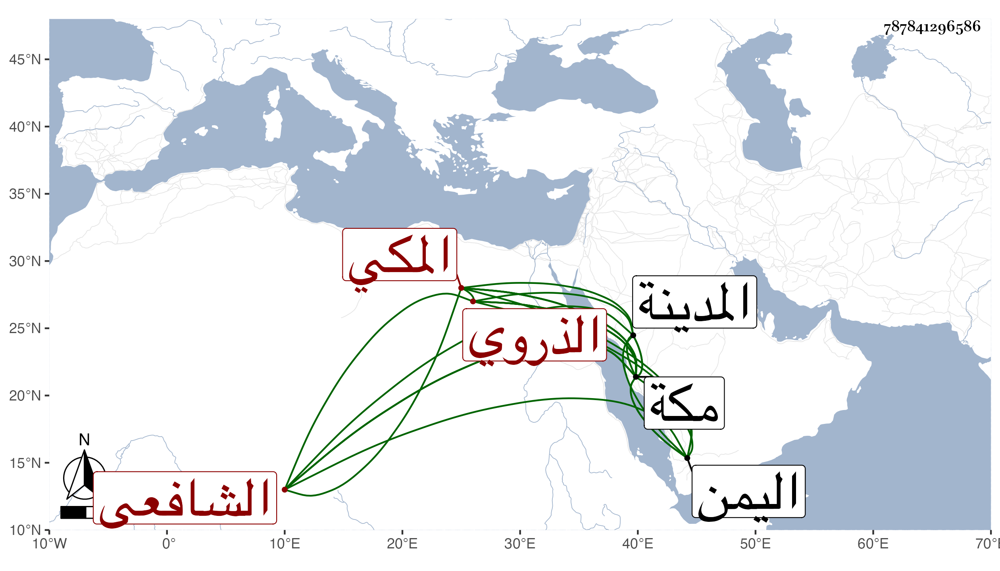

0902Sakhawi.DawLamic.ITO20230111-ara1.EIS1600.787841296586
Biography ID: 787841296586
315
أحمد بن محمد بن أبي بكر بن علي بن يوسف بن إبراهيم بن موسى الشهاب بن الجمال الذروي الأصل المكي الشافعي ابن عم الذي قبله ويعرف بابن المرشدي . ولد بمكة سنة اثنتين وثمانمائة وسمع بها على الزين المراغي وغيره وحفظ المنهاج وغيره وحضر دروس الفقه وغيره عند غير واحد بمكة ، وزار المدينة في بعض السنين ماشيا ، ودخل اليمن غير مرة منها في صحبة أبيه سنة ثلاث وعشرين وعاد في آخرها فأدركه أجله في البحر على نحو يومين فمات غريقا شهيدا في نصف ذي القعدة منها وفاز بالشهادة وكان ذا خير ودين وعبادة وحياء . قاله الفاسي في مكة .
